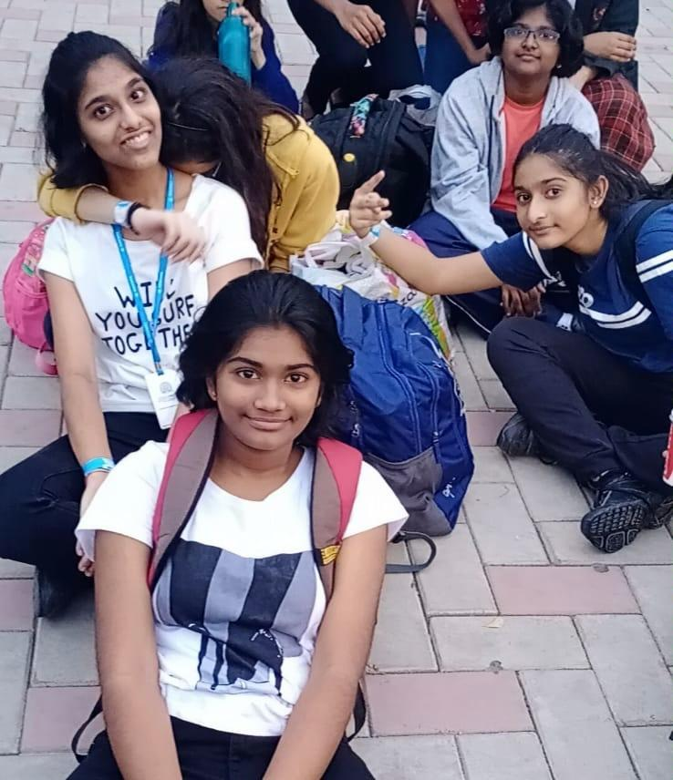
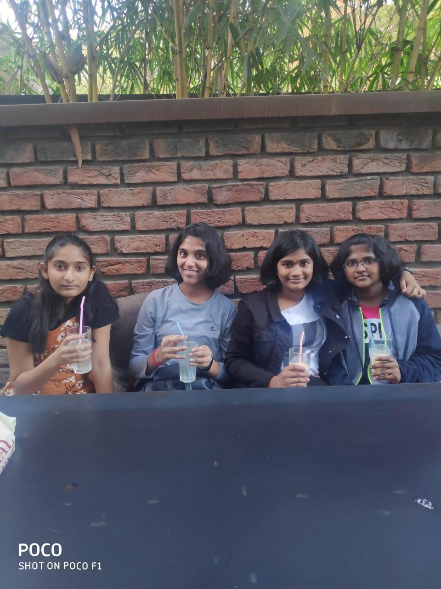
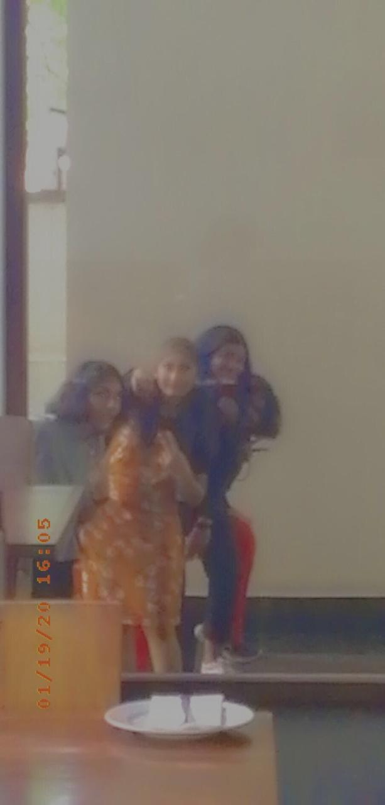
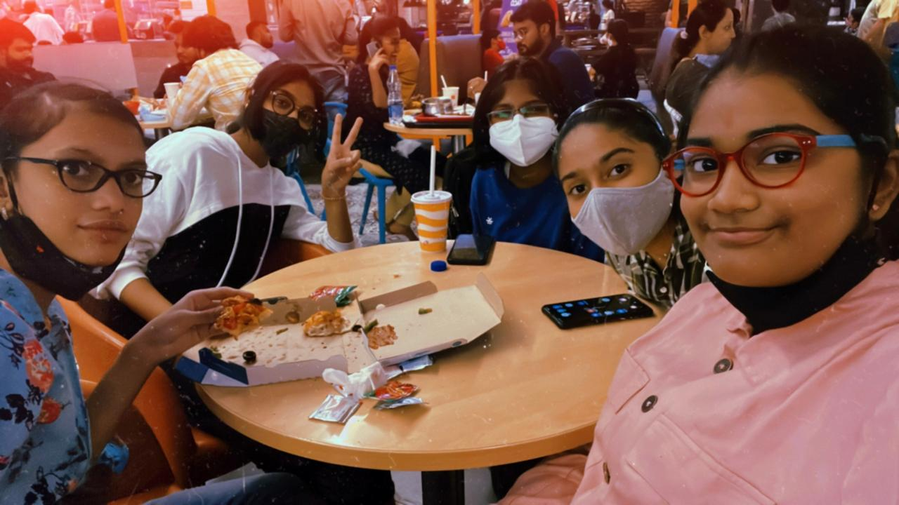
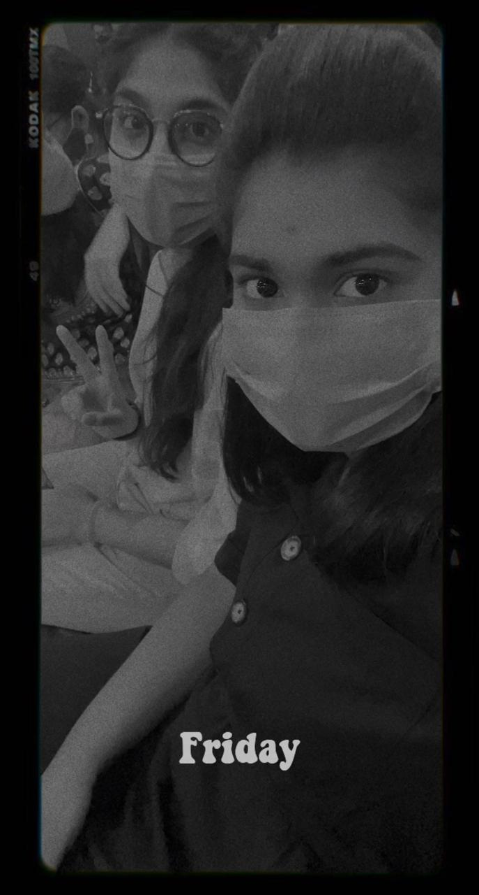
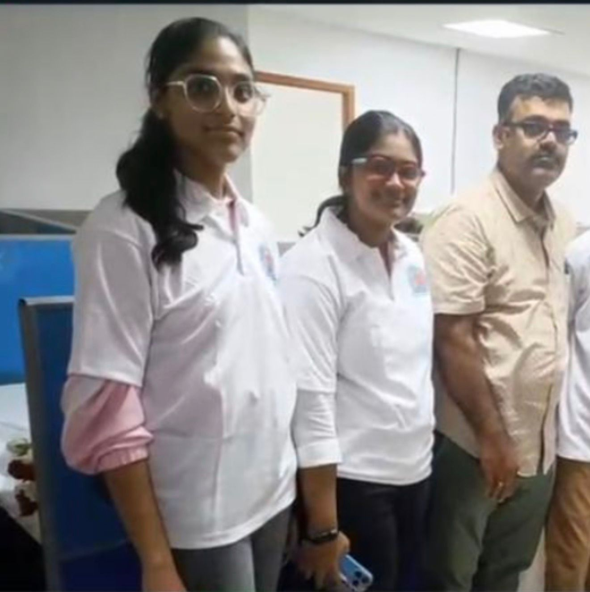
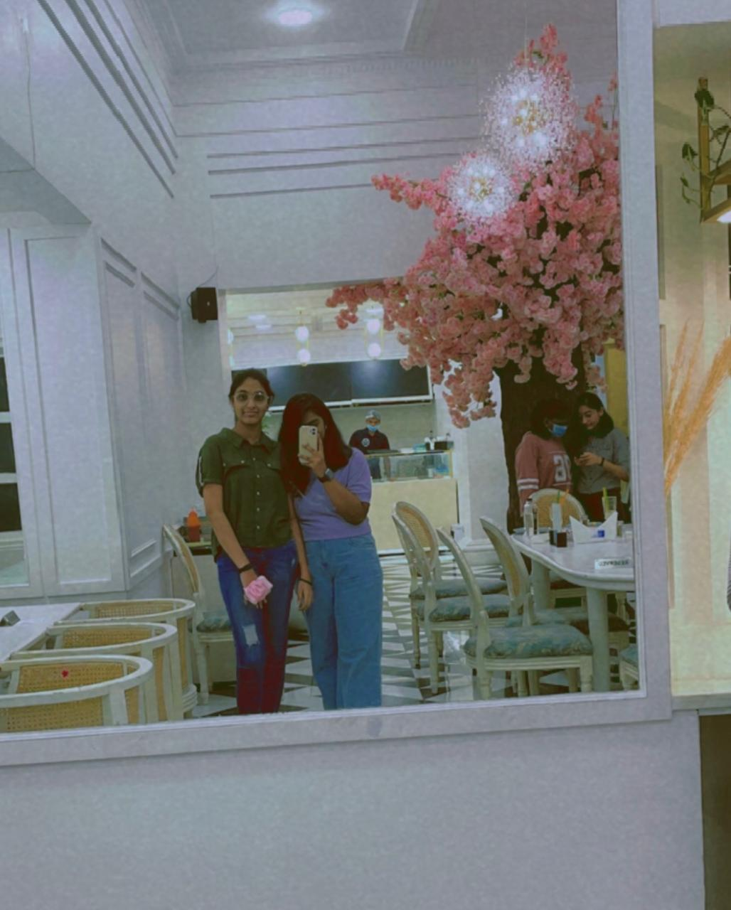
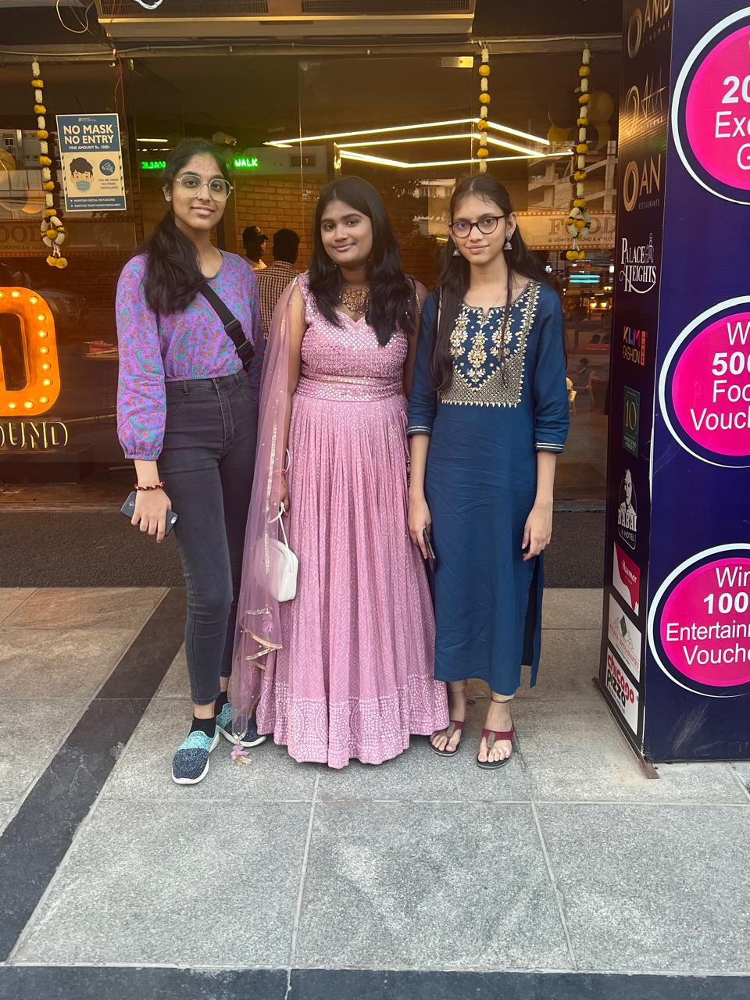
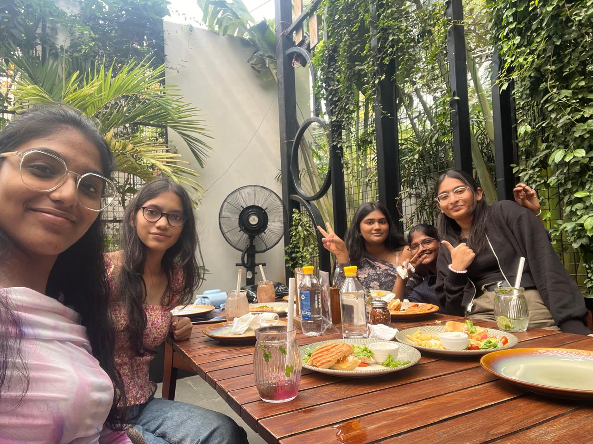
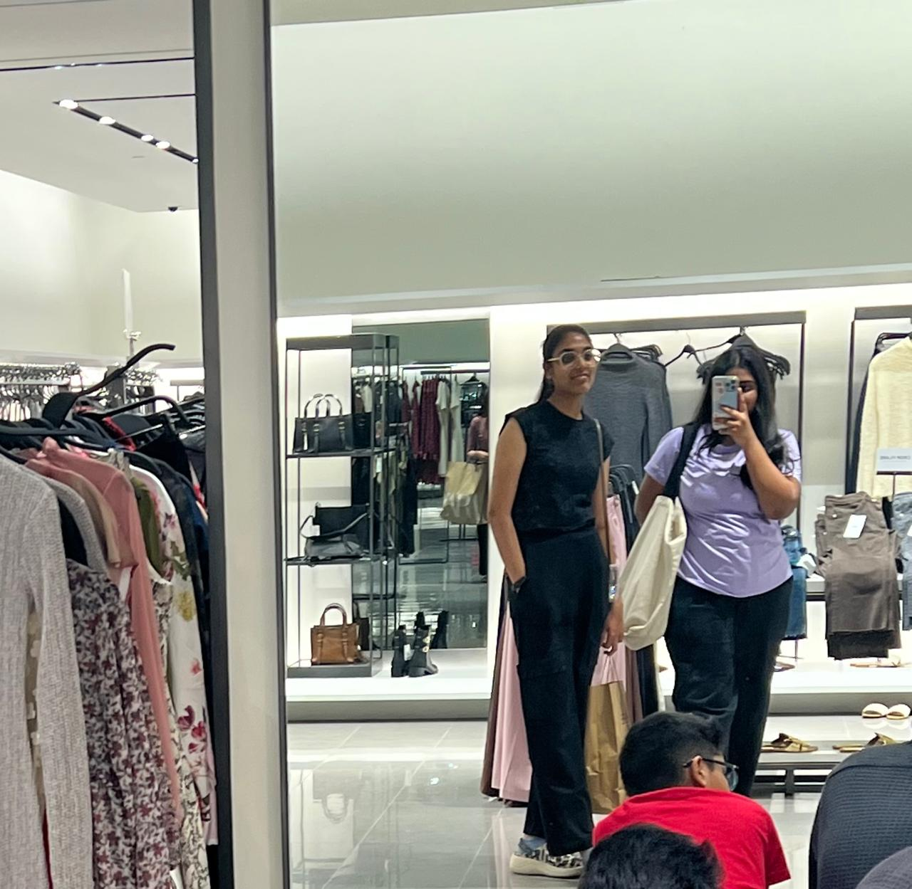

6+ years… and still my bestfriend.

srsly one of the most memorable day..it was prolly our first day out together having smmm fun

ig this was our first ever "official" hangout 🥹

peak friendship moment where nothing made sense but everything was fun...i think we were spying on rida😭

literally nothing special happened but I’d still go back to this day

end of a chapter we didn’t want to end but at least we had each other...take me backkkkk 😭

hard work paid off but having you there made it 10x better🥰

same conversations, same chaos, just a different place

housewarming day… and it meant more because you were there

some things never change… like u being there every birthday💗

my forever shopping partner whether we buy something or not